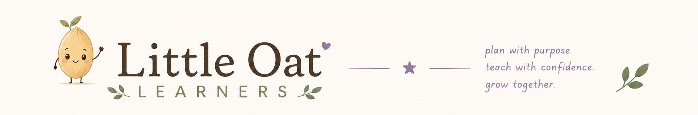

Grammar flashcards for homeschool families, kindergarten through 5th grade: 63 decks and 751 cards, from a first sentence to commas, verb tenses and tricky word pairs. Your child fills the gap, taps the word, picks the sentence that’s written correctly, builds a sentence from shuffled words, or spells the word that fits. Cards come back at the right time until they’re mastered, and each student’s progress is there when you want it. No account, no ads, and everything stays on your phone.
Get the app
Store availability as of November 8, 2026.
Or $19.99 a year for Little Oat Grammar Plus, with a 14-day free trial that starts when you choose a plan. Everything is included in the trial: every deck from kindergarten to 5th grade, every student, all three ways to practice, and the full progress insights. After it, practice needs Plus, but a student’s progress, figures and backups are never locked away. Billed through the App Store or Google Play; cancel anytime in your store settings.
Six levels, from about kindergarten to about 5th grade: complete sentences, capital letters, end marks, nouns and plurals, action words and verb tenses, pronouns, describing words, a or an, is or are, contractions, commas in lists, dates and places, apostrophes for owners, quotation marks, there, their and they’re, fragments and run-ons, helping verbs, conjunctions, perfect tenses, interjections and double negatives. Every deck opens with teaching notes for you.
Add each child with their own grade and progress. Each student’s page opens on a dashboard: progress through each level, lessons completed, cards mastered and cards still being learned. Tap Lessons for every lesson, what it covered and exactly which cards were missed. Set up a lesson as a quick set of any size or pick the exact cards, and mark any card mastered or new by hand.
Write your own sentences with a blank where the answer goes, and the wrong answers to offer beside it, or paste a whole list in at once. They work just like the built-in decks, for every student in the house.
Send a finished lesson to the Daily Work Tracker and it’s logged as graded daily work, filed under Language Arts with the topic, cards covered and your notes already filled in. It goes from one app to the other on your phone.
There’s no account, and everything stays on your device. Backup & export writes a backup file you save to iCloud Drive, Google Drive, Files or email, and restore on a new phone. Backups are always free. You can also export CSV files of progress by deck and of every answer.
No analytics, no advertising and no tracking. The only online service is RevenueCat, which checks whether a subscription is active. Cards are read aloud by your device’s own offline voice, and the app never uses the microphone. Settings, purchases and backups sit behind a grown-ups-only sum, so little hands stay on the flashcards.